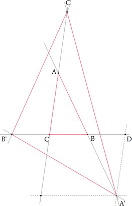
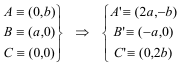
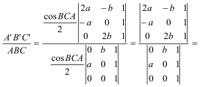
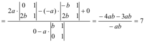

Para el aula. Problema 307
2.- Alrededor de un triángulo. Sea ABC un triángulo.
1º) Construye el punto A' simétrico de A en relación a B; el punto B' simétrico de B en relación a C, y el punto C' simétrico de C en relación a A.
2º) Compara las áreas de los triángulos ABC y A'B'C'
Clapponi, P. (1995): Activité .. autour d'un triangle. Petit X 40, pag. 86. [Clapponi es un seudónimo de Philippe Clarou - Bernard Capponi]. Solución de José María Pedret, Ingeniero Naval. Esplugues de Llobregat (Barcelona). (17 de abril de 2006) |
|
|
|
SOLUCIÓN |
|
|
|
 |
Observando la figura, si tomamos como eje de abscisas a CB, como eje de ordenadas a CA y como origen del sistema de referencia oblicuo a C será
 Y expresando las áreas de los triángulos en función de determinantes

 |